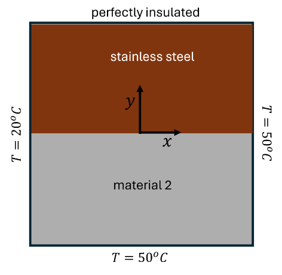

This is the discretization of the 2D steady-state heat conduction with variable thermal conductivity.
The problem below has the Dirichlet boundary condition on the east, south, and west face, while having the Neumann boundary condition on the north face.

Figure 1: Diagram illustrating the boundary conditions for 2D steady-state heat conduction problem.
This begins with the discretization of the 2D heat conduction in the figure below.
Figure 2: Equation of 2D steady state heat conduction with variable thermal conductivity.
For the initial conditions above, these are the results using a grid size of 300x300
Figure 3: Contour plot with ktop = 15 and kbottom = 0.1Figure 4: Contour plot with ktop = 15 and kbottom = 15
Figure 5: Contour plot with ktop = 15 and kbottom = 100Figure 6: Contour plot with ktop = 15 and kbottom = 200
Figure 7: Contour plot with ktop = 15 and kbottom = 300